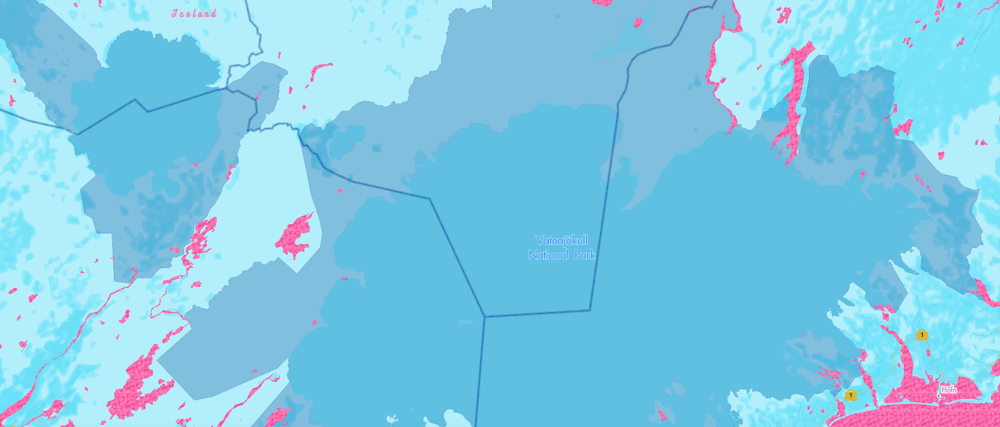
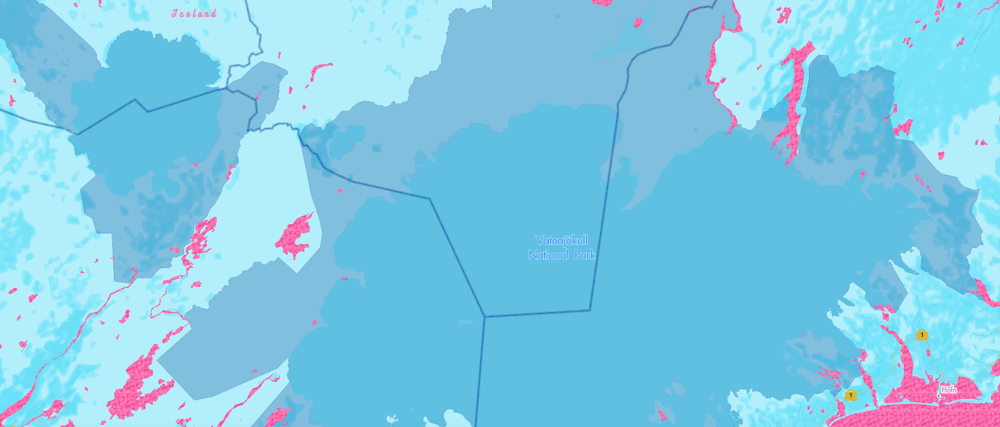

Click through the images to see how the map changes at different zoom levels.

Take a look at my Mapbox Studio Basemap!
Inspiration for this map came from my favorite Wes Anderson movies Moonrise Kingdom and The Grand Budapest Hotel.
Click through the images to see how the map changes at different zoom levels.

In this map, keys are used to signal Points of Interest and the Suitcase singals highway systems to further convey the Wes Anderson aesthetic.
Additionally, all water features have a grainy and scratchy texture which juxtaposes the actual texture of water.
 

Check out the map at different places and zoom levels! This is Madison, WI.
Vatnajökull National Park, Iceland
New Dehli, India
Europe
Explore the whole map!